Ingredients – Guide (version 2)
October 2026 · new layout with the bar at the bottom · for Android 7.0 and newer
Ingredients checks food for you: scan the barcode and the app tells you whether the product suits your profile (no pork or alcohol, vegetarian, vegan, allergies, health) – and why, with sources. Free, no ads, your data stays on your phone.
Contents
- The home screen and the bottom bar
- Settings (the gear)
- Create the profiles (once)
- What I avoid, allergies
- My health and My rules
- Scan a product
- Read the result
- Why? and alternatives
- The highlighted ingredient list
- Health
- An ingredient’s page
- Compare two products
- History and favourites
- Shopping: the list
- Shopping: till receipts (new)
- Add a receipt
- View a receipt
- Search for a product (magnifying glass)
- Photograph a label, add a product
- Report an error, updates, delete everything
Part A — Install the app
Before you start
- Be on Wi-Fi (the file is about 57 MB, “Universal” 121 MB).
- Have at least 500 MB free: Settings → Battery and device care → Storage.
- The APK from the download page.
Method 1 — Directly on the phone (10 minutes)
- Turn off Auto Blocker (Samsung): Settings → Security and privacy → Auto Blocker → Off (confirm with your PIN).
- Turn off Android “Advanced Protection”, if your phone has it: type Advanced Protection in the Settings search bar. If it is on, turn it off (it forbids any installation outside the Play Store). If the search finds nothing, go to the next step.
- Download the APK: open the link in Chrome. If Chrome warns “this type of file can harm your device”, tap Download anyway. Wait for the download to finish.
- Open the file from “My Files” (not from the notification): My Files → Downloads → the .apk file.
- Allow this source: the phone says “your phone is not allowed to install unknown apps from this source”. Tap Settings, turn on Allow from this source, then go back.
Manual path if needed: Settings → Apps → ⋮ (top right) → Special access → Install unknown apps → My Files (and also Chrome) → Allowed. - Tap Install.
- If Google Play Protect blocks it (“App blocked to protect your device” or “Unsafe app blocked”): tap More details → Install anyway.
If there is only OK: open Play Store → your profile picture (top right) → Play Protect → ⚙ (gear) and turn off “Scan apps with Play Protect”, then repeat from step 4. - Open Ingredients. Done.
- Turn the protections back on: Auto Blocker on, Play Protect on, and remove the “Install unknown apps” permission from My Files and Chrome. The app stays installed and keeps receiving updates.
It doesn’t work? Find your message
| What you see | Cause | Solution |
|---|---|---|
| “Installation blocked” / “blocked by Auto Blocker” | Auto Blocker still on | Step 1. Check that it really is Off, then restart the phone. |
| “…not allowed to install unknown apps from this source” | The app opening the file lacks permission | Step 5, for My Files AND Chrome (and WhatsApp/Gmail if the file came from there). |
| “Blocked by Play Protect” / “Unsafe app blocked” | Google doesn’t know the app | Step 7 (“Install anyway”, or turn off the Play Protect scan during the installation). |
| “App not installed” / “…package conflicts with an existing package” | An old Ingredients version from another source is installed | Uninstall the old Ingredients (long press on the icon → Uninstall), then install again. Settings must be set again. |
| “App not installed” / “not compatible” with no other detail | Wrong processor type, incomplete file or not enough space | Take “Older phones (32-bit)” or “Universal” on the download page. Check that the file is complete (57, 48 or 121 MB) in My Files; otherwise delete it and download again on Wi-Fi. Free some space. |
| “Parse error” / “There was a problem parsing the package” | File damaged during the download | Delete it and download again (method 1), or transfer it another way (method 2). |
| Nothing happens when tapping the file | Opened from the notification or a preview | Open it from My Files → Downloads. |
| “Blocked by your administrator” / work phone | Phone managed by a company (Knox, work profile) | Cannot be bypassed: use a personal phone. |
| Everything done and it still refuses | Unidentified Samsung/Google block | Method 3 (USB cable + computer): it bypasses the phone’s installer. |
Method 2 — Get the file another way
Useful if the download fails or the file is damaged. The .apk file can be sent:
- by Quick Share from another Samsung phone or a Windows PC (the file arrives in My Files → Downloads);
- by USB cable from a computer: connect the phone, choose File transfer in the USB notification, copy the file into the phone’s Download folder.
Then continue method 1 from step 4.
Method 3 — USB cable + computer (always works)
This method worked when the direct installation was refused. You need a computer (Windows, Mac or Linux) and a USB-C cable that transfers data.
On the phone:
- Turn on developer options: Settings → About phone → Software information → tap “Build number” 7 times (enter your PIN). The message “Developer mode has been turned on” appears.
- Settings → Developer options → turn on USB debugging.
- Connect the phone to the computer, unlock the screen. At “Allow USB debugging?”, tick Always allow from this computer → Allow.
On the computer:
- Download Google’s official “Android SDK Platform-Tools”: developer.android.com/tools/releases/platform-tools, and unzip the platform-tools folder (e.g. to C:\platform-tools).
- Download the .apk file to the computer (e.g. into Downloads).
- Open a terminal in the platform-tools folder (Windows: in Explorer, type
cmdin the address bar and press Enter) and type:
adb devices
The phone must appear with the word device. If it says unauthorized, look at the phone and tap Allow. Then:
adb install -r "%USERPROFILE%\Downloads\ingredients.apk"
(replace with the real file name; on Mac/Linux: ./adb install -r ~/Downloads/ingredients.apk). When Success appears, it is installed.
To finish: Developer options → USB debugging → off.
After the installation: updates
- Each time it opens, the app downloads the new version in the background. A banner “A new version of the app is ready” offers Restart to install it.
- At the very bottom of the home screen, the App version block shows the version and a Check for an update button.
- No new APK needed, unless you are explicitly asked.
Part B — Use the app
1The home screen and the bottom bar
Five buttons always stay at the bottom – one tap to switch:
- Home · Scan · Shopping · History · Profile.
- Top right: the magnifying glass 🔍 to search for a product by name or brand, and the gear ⚙ for settings.
- Check for: shows whose profile is used (when there are several). Tap a name to switch.
- The big green Scan a barcode button is the quickest; below it, Photograph a label.
- Recently checked: your last three products, with Full history. At the bottom: Share the app.

2Settings (the gear)
- Home → gear ⚙ top right.
- Language: Français, Deutsch or English. On first launch, the app uses the phone’s language.
- Appearance: System (like the phone), Light or Dark.
- App version: your version and Check for an update.
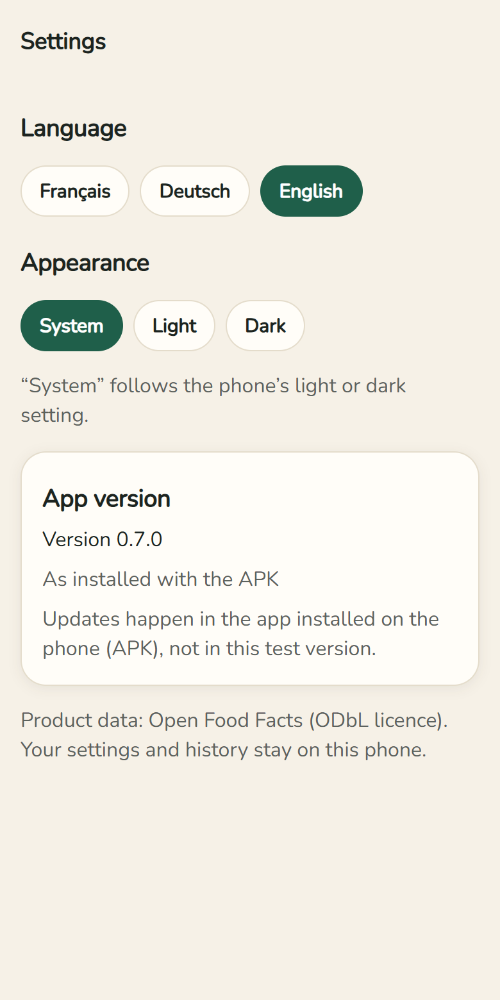
3Create the profiles (once)
Bottom bar → Profile. Everything stays on your phone only.
- Under Profiles, “Me” already exists. For another person (e.g. a child with an allergy): type a first name → Add a profile.
- The profile in green is the one you are setting up, and the one used for every verdict.
- Rename changes the name; “Delete the profile …” removes it (after a confirmation).
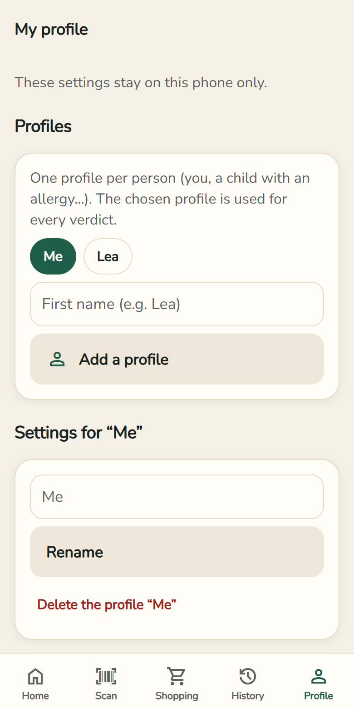
4What I avoid, allergies
- What I avoid: switches No pork, no alcohol, Vegetarian, Vegan. Under each one, exactly what is checked.
- Allergies and intolerances: tap the 14 EU allergens that concern you. Selected ones turn green.
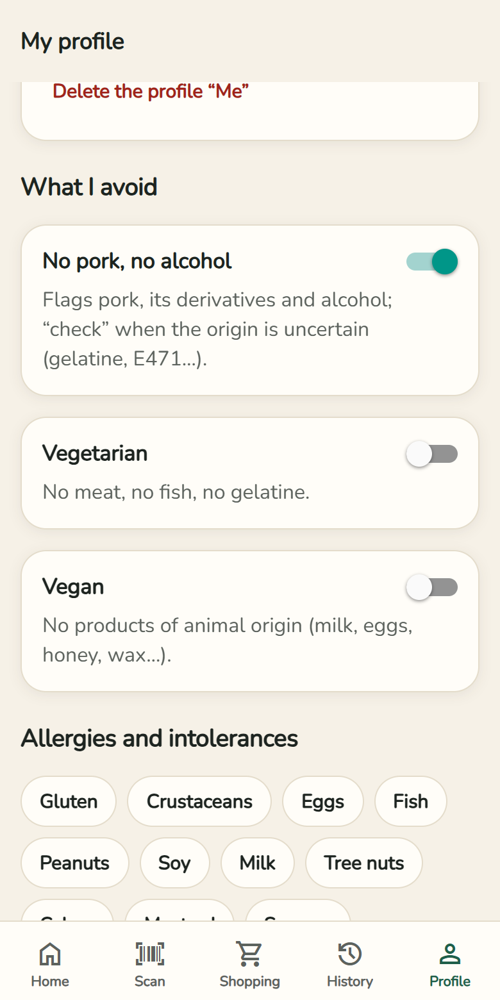
5My health and My rules
- My health: what your doctor advises you to limit – Sugars, Salt, Saturated fat, Risky additives. A product high in it then becomes “Check”.
- My rules: your own word to look for, e.g. “Palmöl” (palm oil). Forbidden or Watch → Add the rule. Deleted by mistake? An Undo bar appears for a few seconds.
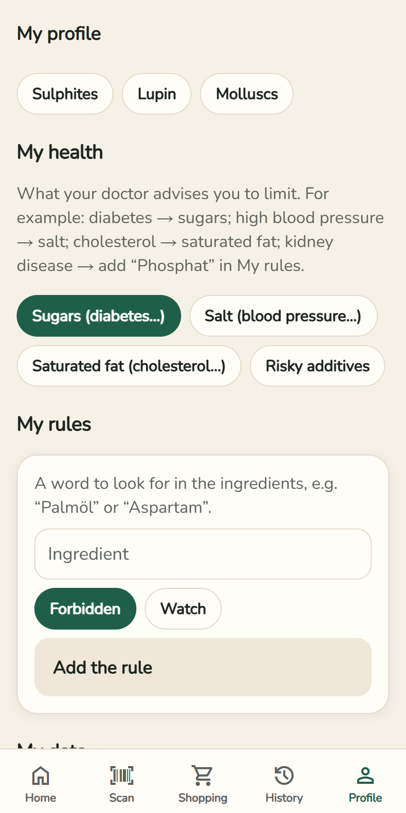
6Scan a product
- Bottom bar → Scan (or, on the home screen, Scan a barcode).
- The first time: Allow the camera. Images are neither saved nor sent.
- Hold the barcode inside the frame: it turns green, the phone vibrates, the result opens.
- Not reading? Type the digits under the barcode → Check this code.
- On the same page: Photograph a label when a product is unknown.
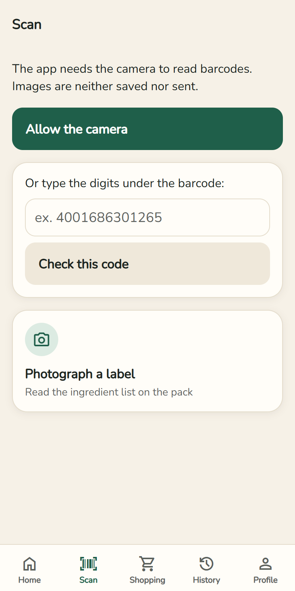
7Read the result
- At the top: photo, name and brand of the product.
- Three buttons: ☆ Favourite, + Shopping list, ⇄ Compare.
- The verdict in a coloured card: ✓ Suitable, ! Check, ✕ Not suitable or ? Unknown. Below it, the confidence.
- Read the result aloud: the phone reads the verdict. The arrow top left takes you back where you were.

8Why? and alternatives
- Why? lists every reason for the verdict, with the word as written on the pack and its source.
- “Check” means the data does not allow a sure answer (e.g. gelatine without the animal stated): look at the pack or ask the manufacturer.
- Find alternatives that suit me: products of the same category that suit you. No advertising.
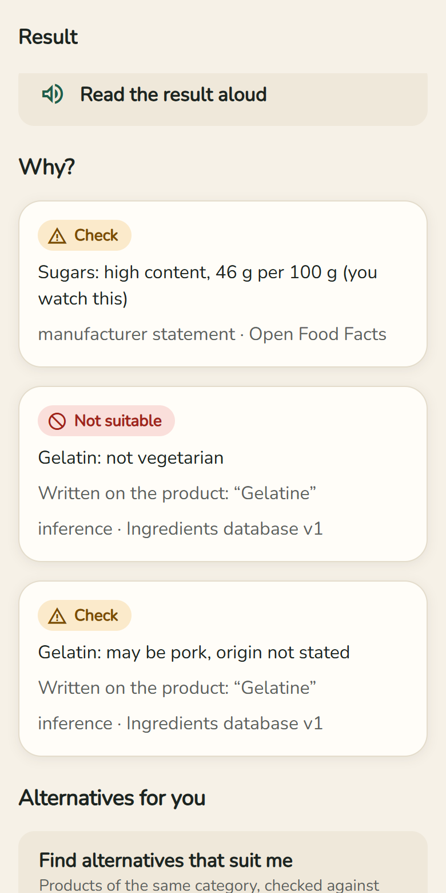
9The highlighted ingredient list
- red = you avoid it · orange = to check · purple = health: watch.
- Underlined = explained ingredient: tap it. Dotted = not known to the app yet.
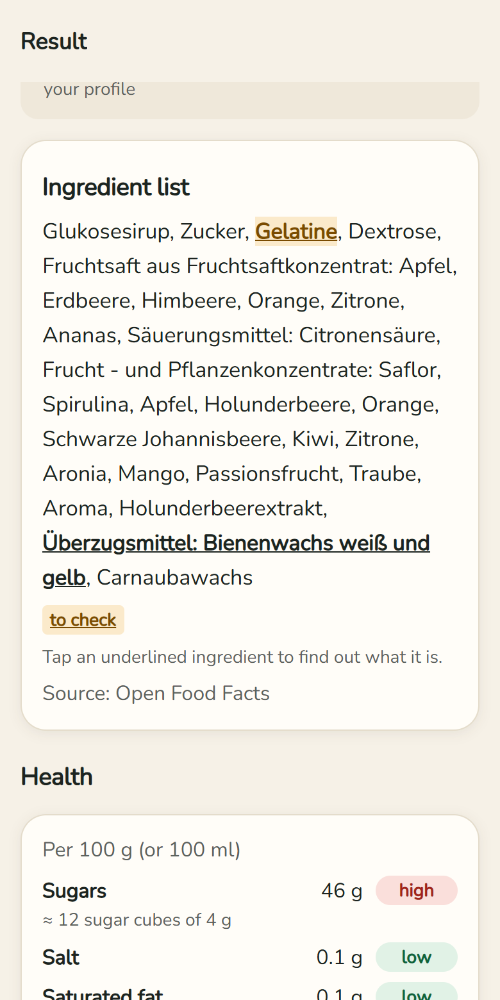
10Health
- Sugars, salt, saturated fat and fat per 100 g, with low / moderate / high; sugars in sugar cubes, salt as a % of the WHO maximum.
- Risky ingredients and their sources (WHO, EFSA…). A healthy product gets Good choice!
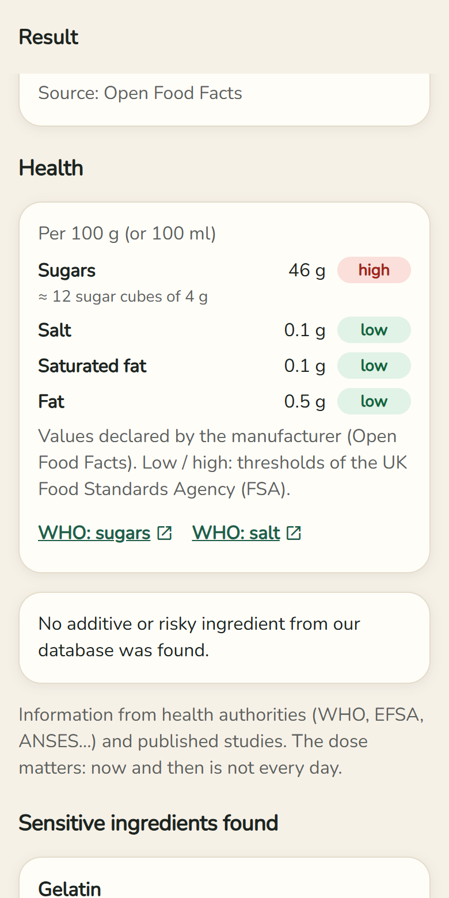
11An ingredient’s page
- What is it?, Other names (E numbers too), In detail for tricky cases.
- What it means for your profile, effects on health, official and checked sources with the date of the check.
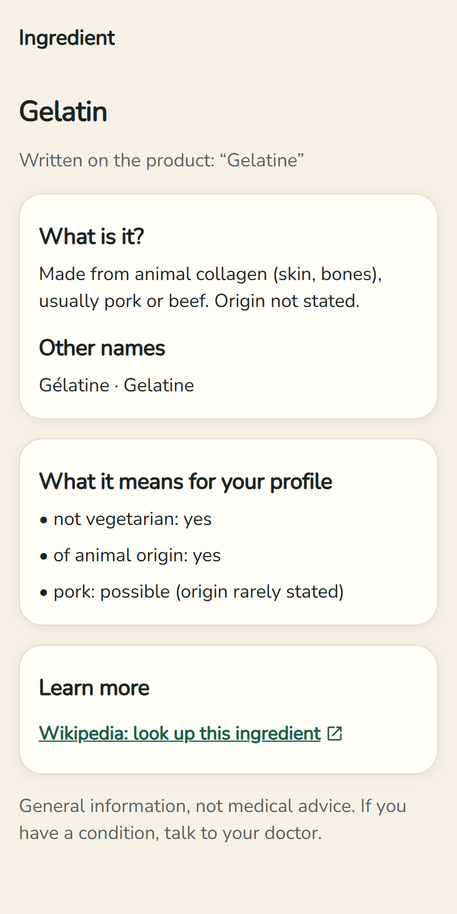
12Compare two products
- On a product: ⇄ Compare, then scan or pick the 2nd product.
- Both side by side: verdict, sugars, salt, fat, additives, Nutri-Score. The better one is marked better.
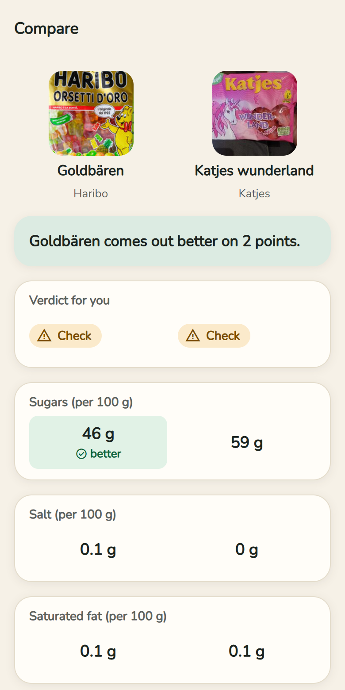
13History and favourites
- Bottom bar → History: every product you opened, even offline.
- Filters: All / ★ Favourites, by verdict and by category. Verdicts are recalculated with the chosen profile.
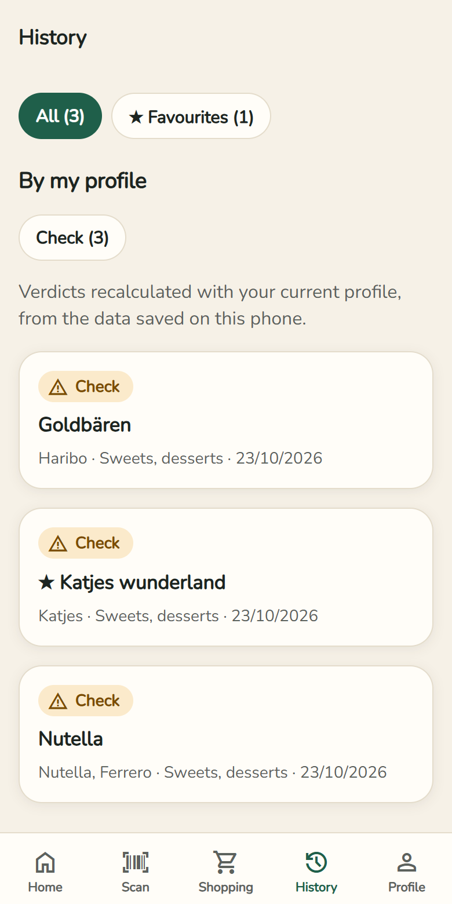
14Shopping: the list
- On a product: + Shopping list.
- Bottom bar → Shopping → at the top List: tick what you bought; Send the list by WhatsApp, SMS or e-mail.
- Shopping for someone else? Choose their profile at the top: a red banner flags items that don’t suit them.
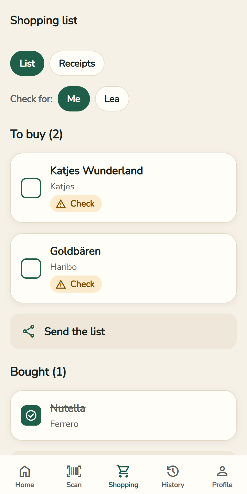
15Shopping: till receipts (new)
After shopping, keep an eye on what you spend.
- Bottom bar → Shopping → at the top Receipts.
- This month: total of all receipts of the current month.
- Each receipt shows the shop, date, number of items and amount. Total checked: the items add up exactly to the receipt total. Difference to check: an item is missing or a price was misread.

16Add a receipt
- Add a receipt → Scan the receipt. The scanner finds the edges, crops and straightens the image. Long receipt: several shots, top to bottom, without overlap.
- The receipt is read on the phone (even offline): items, prices, total, shop and date. A photo from the gallery goes through Choose a photo.
- Check and correct the items (name, price; a discount with a minus: -0.30). An empty red box is a price that could not be read: fill it in. Photograph the rest of the receipt adds more items.
- The Total check compares the items with the receipt total (or the VAT table) → Save the receipt.
- Optional: Scan the QR code, if the receipt has a sharp one. It only confirms the exact total; the items are not in it.
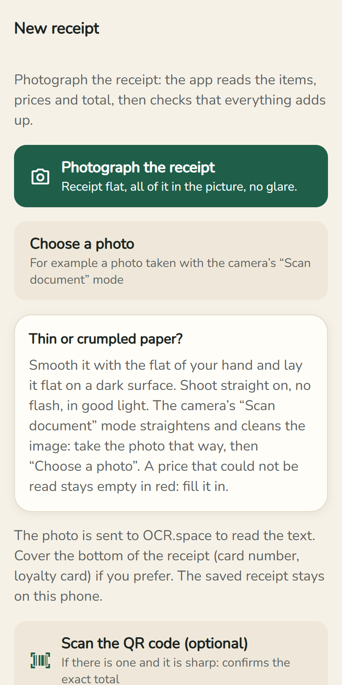
17View a receipt
- Tap a receipt: total, result of the check, Payment (cash / card) and Split by VAT rate – 7 % is mostly food, 19 % drinks, toiletries and the rest.
- Below, every item with its price. Discounts and returned bottles show in green with a minus.
- Delete this receipt removes it (after a confirmation).
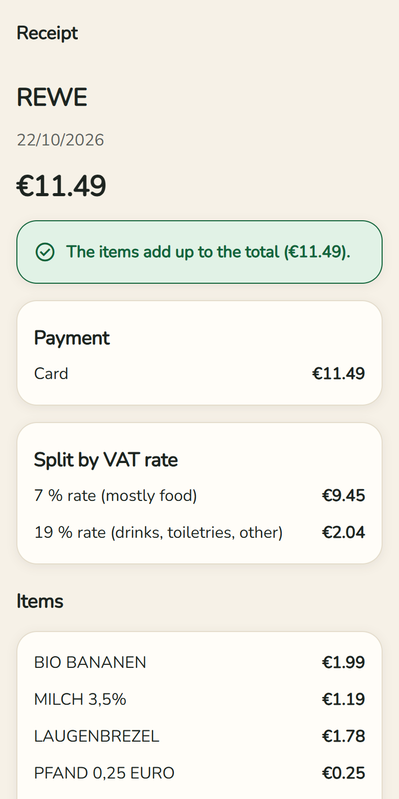
18Search for a product (magnifying glass)
- Home → magnifying glass 🔍 top right.
- Type a name or brand (German often works best) → Search. Each result is checked against your profile; Only the ones that suit me filters.
19Photograph a label, add a product
- Photograph a label (home or Scan tab): photograph the “Zutaten” paragraph flat and sharp, check the text → Analyse.
- Unknown product: Add this product to Open Food Facts – with your free account on openfoodfacts.org. It is then recognised for everyone.
20Report an error, updates, delete everything
- Report an error (at the bottom of every result): a ready-made e-mail, without your profile.
- Updates arrive by themselves: “A new version of the app is ready” → Restart. To check yourself: Gear → App version → Check for an update.
- Profile → My data → Delete everything: profiles, history, favourites, shopping list, receipts and account are erased from the phone.
Part C — Good to know
- The app replaces neither the pack, nor your doctor, nor a religious authority. It certifies nothing. With a severe allergy, always read the label.
- When it doesn’t know, it says so (“Unknown”, low confidence).
- No ads, no required account. Product data: Open Food Facts (ODbL licence). To read a photo, the image is sent to the OCR.space service; your profile, never.
- Questions or ideas? Write to draboibro@gmail.com.